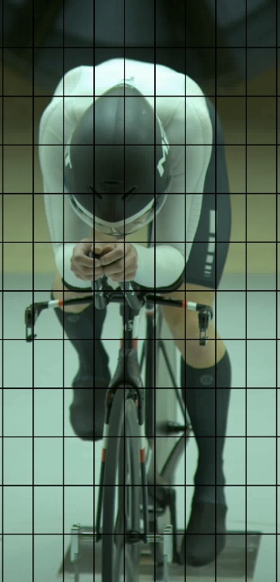
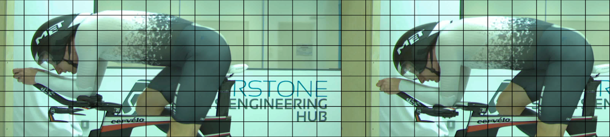
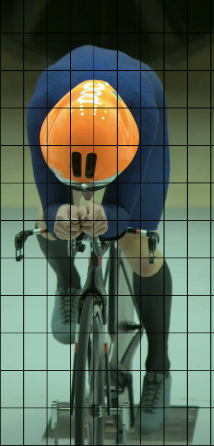
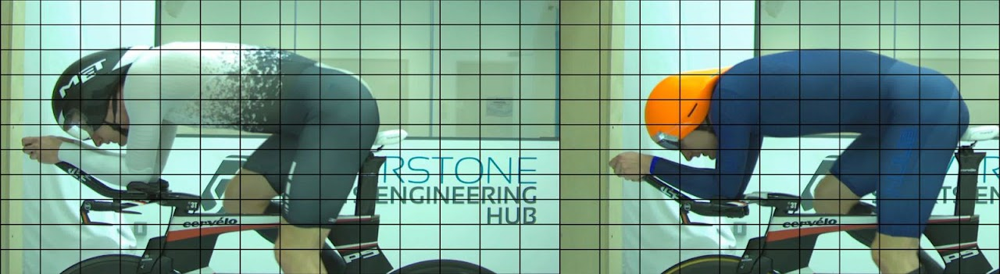
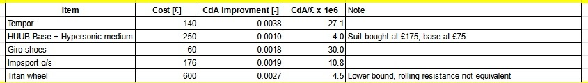
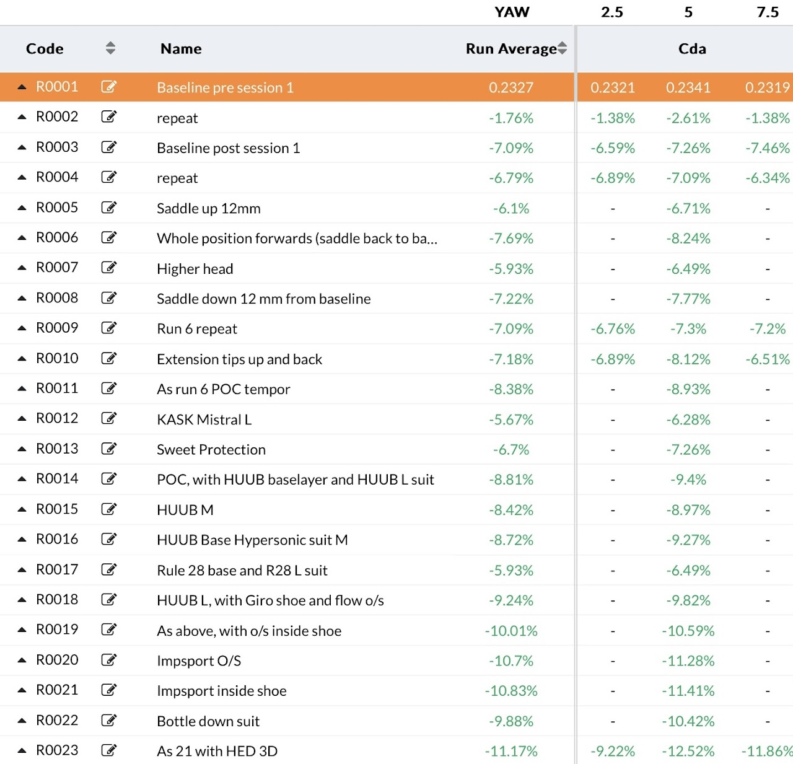

Wind Tunnel Testing 2024
This one has been a long time coming. The initial findings from the 2023 tunnel session, the subsequent custom part build, and a fair amount of winter desk research have all been aimed at producing more speed in the 2024 season. But at last, I am pleased to say, I am in a position to pen down some more Aerotica™.
Firstly, a huge shout out to Mike Hutchinson, who consulted on the session schedule, lugged a bunch of items for me to test, administered the wind tunnel proceedings, and provided a general calming presence and voice of reason in the heat of testing — all while feeling rather rough suffering from a cold. A huge thank you; I couldn’t have done it myself (and not just because the door at the tunnel locks from the outside so I couldn’t let myself out).
Session goals
This follow-up tunnel session aimed at three things:
- Verification of the implementation of the findings from the 2023 session — i.e. did I manage to replicate the gains found in 2023 in a robust and road-worthy bike configuration?
- Follow-up on unfinished business from 2023 — a few questions left unanswered due to the limited number of runs we managed.
- Equipment fine-tuning in the new position.
The second point deserves a word of explanation. In the 2023 session, due to the complexity of the setup, we only managed a very limited number of runs. This left a few questions unanswered:
- Why does getting ever so slightly more compact at the front end appear to produce significant gains at high yaw?
- Whether translating the entire position forward (elbows and saddle pushed forward by the same amount, compensating saddle height for the forward motion) without affecting the shape of the front end alters the CdA. This matters because, for power production reasons, I quite like to sit far forward, almost on top of the bottom bracket.
As for the third point, my equipment setup had been put together largely ‘by eye’: sensible rules of thumb for minimising CdA (matching tyre width to the rim, taking inspiration from riders of similar stature in a similar position — though owing to my peculiar anatomy, the pool of riders I could steal ideas from was severely limited), plus some limited field testing. The effectiveness and resolution of these methods is less than perfect, and chances were I was leaving quite a lot to chance.
Position testing
We kicked off by taking a couple of baselines. First, the old position from before 2023; then the front end was swapped to the new custom one. There was a fair amount of noise in some of the baseline runs and their corresponding repeats, later attributed to the Flow suit, which can be temperamental in terms of seam placement. Once we moved to skinsuits and settled on one of the smooth ones for the remaining test runs, data variability decreased — reinforcing the ‘temperamental suit hypothesis’. Even with the noise, the direction of travel was clear. The CdA drop from the front end change alone was somewhere in the region of 6 percent (closer to 5 in the ‘good’ 2023 baseline run, closer to 7 in the ‘bad’ repeat). This is in line with the 2023 session, and perhaps a little better.
Other position tweaks included checking saddle height; saddle-up turned out to be marginally worse. Saddle-down was within noise, but since post-session training has shown lowering the saddle to be beneficial for power production (due to glute stretch and quad compression), it was good to know there was no aero penalty — a small gain, if anything.
Translating the entire position forward (elbows and saddle pushed forward by a couple of centimetres) turned out to be rather good, landing another ~4 watts. Except the suit struck again, and the gains failed to materialise during a repeat. Not too disheartening, as the forward shift was primarily intended to facilitate better power production rather than improved aerodynamics — and that it does.
One more thing checked: the aero penalty of riding head-up. Not for visibility reasons (I always have good visibility of the road ahead), but because my neck is on the longer end of the spectrum — I wondered whether keeping the head in-line with the body is better than plugging the gap between head and arms. It was not: head-up was slower by a margin unlikely to have been caused by noise.


Helmets
With position testing done, we moved onto hardware. We started with helmets — easy to test and quick to rattle through.
We started with the Tempor and immediately saw 4–6 watts added to the tally. My previous helmet, the MET Drone, sits nicely and integrates well with the back and shoulder blades, but does very little to shelter the shoulders. The Tempor shares the Drone’s advantages while extending much further to either side. It doesn’t quite serve as a complete fairing (as it does on some smaller, narrower riders), but very clearly does a good job.

The Tempor was a hard act to follow, and we were right: neither the Kask Mistral nor the Redeemer (Sweet Protection) got anywhere near. We had a few other helmets lined up on a conditional basis — testing the Redeemer because the Tempor did well and the ‘deflection around the shoulders’ design philosophy seemed to work; similarly, we would have tested the Kask Bambino or a HJC Addwatt had the Mistral done well.
Skinsuits
We had a few smooth suit + baseline combinations lined up, as well as the Impsport single layer. Sadly, I was not able to squeeze myself into the Impsport, even the largest size available — a shame, as I had high hopes for it. All size testing was done before starting the fan, which I would strongly recommend; it is far too easy to lose precious minutes attempting to squeeze into the wrong size garment.
That left us with the HUUB and the Nopinz Hypersonic. We didn’t manage to source a Nopinz base layer but tested both suits with the HUUB Bridge. For HUUB we also tested both medium and large versions to see the effect of fabric stretch. Unsurprisingly, the large (closer to the proper size for me) tested slightly faster. Interestingly, the Hypersonic in medium — the only size available — tested only marginally (within noise) slower than the HUUB in large. This raises the question of whether a properly sized Hypersonic would exhibit a similar delta; I think it pretty likely, so I’ll keep an eye on Nopinz promos.
The Rule28 suit did terribly — it was simply not cut out for me. This may be because the versions available at the tunnel had small pockets around the lower back area (almost like a standard cycling jersey), which for most people doesn’t interact with the flow much, but because of my very flat back position this may have caused some nasty interaction. Pure speculation, of course.
Footwear
Honestly, I wasn’t expecting to find much here, but in the name of trusting the process I acquired a pair of fairly narrow lace-up Giro Empire shoes second-hand for next to nothing. These turned out to be the single best watts-per-quid performers of all items tested — and by some margin.
Not only is the shape of the shoe better (perhaps slightly narrower, no BOA dials), but the shoe tested even faster when exposed to the wind instead of hidden under an overshoe. I achieved this by wearing my overshoe inside the shoe like a second pair of socks.
- Giro Empire with overshoe on the shoe: ~0.4% CdA improvement
- Giro Empire with overshoe inside the shoe: ~1.1% CdA improvement
- Subsequent overshoe change (worn on the shoe): another 0.7% CdA gain
- That overshoe worn inside the shoe: a further ~0.15% CdA improvement
That’s roughly 2% CdA improvement from a £60 pair of shoes paired with some funny socks. What’s wrong with this sport?
Hydration and wheels
Almost out of time, we ran a couple of quick stand-alone tests.
First: hydration systems. In the absence of a proper front-mounted bottle, I stuffed a bottle down my suit. To my relief, it was a fair bit slower. My position is extremely horizontal, to the point where a bottle adds more frontal area without doing much deflecting. The added bonus is that I can treat all the thirsty characters at the start line with (well-calibrated) contempt.
Second: wheels. My wheelset is not a great one — I had done what I could to make it as fast as possible (short valves, matched tyre widths), but fundamentally they were designed with the Mk.I eyeball as the primary means of aero assessment. Swapping my ‘Sainsbury’s Basics’ tri-spoke for Mike’s ‘Taste the Difference’ HED one produced the final gain of the session: ~1% CdA.
Summary

Looking at the pictures, the position doesn’t look all that different — and it doesn’t feel all that different — but it must be, not only because of the tunnel results, but because of how it has translated onto the road. The gains seen in tunnel testing have migrated well to actual racing: absolute times and SpinData scores have improved in line with expectations from straightforwardly applying the tunnel gains to my road CdA. PBs have been broken across the board, some of which had been set with 15–30 watts more than I’m producing at this point in the season. Few things are more frustrating than posting good tunnel gains only for them to prove elusive on the road.
The table below summarises what I ended up buying, what I paid (second-hand where possible), and how it performed. I’m a bit of a second-hand king and only buy new when sourcing a quality used component is essentially impossible — the only new item was the Impsport overshoes.


An eagle-eyed reader will note that the wheel tested (a HED tri-spoke) is not the wheel I ultimately bought. I opted for the Titan because the exact HED we tested is something of gold dust and most run tubular. The Titan is more modern, can run tubeless/clincher, and has been tested by Aerocoach on a Cervelo P5 — not exactly the same model, but close enough. The tunnel test was primarily to compare my old tri-spoke to any ‘competent’ wheel to decide whether an upgrade was worthwhile; the HED just happened to be what was available from Dr. Hutch’s wheel house.
Observations
Some notes for anyone planning their own tunnel session:
- Prepare thoroughly. Having learnt how stressful geometry changes under time pressure can be, I rehearsed all procedures at home, bagged all relevant nuts and bolts into labelled bags, and generally controlled the controllables. This paid dividends — we fitted a huge number of tests into the session.
- Yaw angles. For this session we changed the yaw angles from 2023 (making the datasets not directly comparable, but more practically meaningful). Zero yaw doesn’t really exist in practice: even riding straight into a headwind one tends to wiggle on the bike, generating small but appreciable effective yaw. After accounting for wind shear (wind at ground level is much slower than the forecast figure, which is quoted at ~10 m height), yaw angles are surprisingly small — I’ve only rarely dipped into double digits. We therefore selected 2.5, 5, and 7.5 degrees.
- Suits. In hindsight, starting position testing in a smooth skinsuit rather than the Flow suit would have reduced noise and made debugging the positions easier.